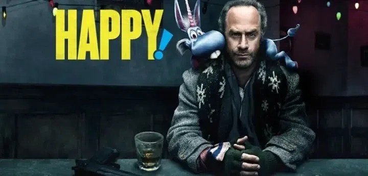
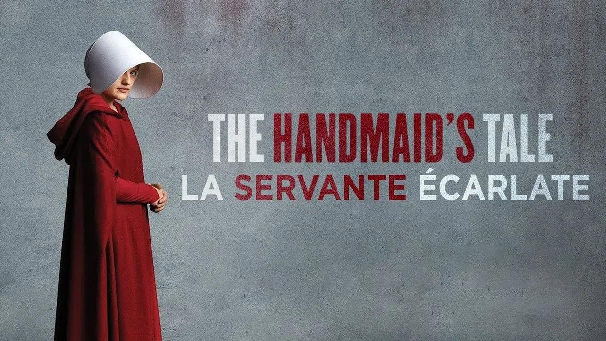

Installez-vous confortablement, on va vous éclairer sur ce que vous ne devez pas manquer !
Jojo Rabbit - Film
Synopsis :
Ce film réalisé par Taika Waititi conte l’histoire de Jojo, un petit allemand relativement solitaire.
Celui-ci croit aveuglément au nazisme, à tel point, que sa chambre en est décorée de posters. Sa
vision du monde est mise à l’épreuve tout au long du film, à partir du moment où il découvre dans
son grenier une juive cachée par sa mère. Avec la seule aide de son ami imaginaire Adolf Hitler,
Jojo va devoir faire face à son nationalisme aveugle. Le film réussit à mélanger humour, émotion et
réflexion avec brio.
Critique :
Jojo Rabbit est pour moi, une pépite parmi les nombreux films sur la 2nde Guerre mondiale. Une
véritable fable poétique d'une extrême beauté. La grande majorité des films sur cette époque mettent
les Occidentaux sur le devant de la scène combattant les "méchants nazis". Ce film sort du lot en
proposant l’évolution d’un jeune nazi en Allemagne, doté d’une foi aveugle envers sa patrie. On se
rend compte que l’embrigadement de la jeunesse mis en place par le régime porte ses fruits ... Voir
la vie d'une jeunesse hitlerienne à l'écran est peu commun.
Ce film réussit à ajouter de nombreuses pointes d’humour avec le personnage d’Adolf Hitler tourné en
dérision malgré la gravité de la situation racontée. L’émotion a également une part importante grâce
à la relation mère-fils incarnée à l’écran par Scarlett Johansson et Roman Griffin Davis. Le mélange
est fait avec parcimonie grâce au génialissime Taika Waititi. J’ai également noté que de nombreux
plans présents dans le film sont très esthétiques, permettant un véritable plaisir visuel. On ne
peut qu’encore une fois, saluer le travail du réalisateur.
L’évolution du personnage au cours du film à partir du moment de la découverte de la fille juive dans
son grenier se fait très progressivement permettant de passer d’un enfant ignare avec l’esprit
obnubilé par le nazisme croyant que les juifs sont des démons suceurs de sang, à un enfant remettant
en question sa propre place dans la société / dans le monde. Ce film satirique anti-guerre ne vous
laissera pas de marbre et vous permettra une véritable réflexion. Comme l'a très bien dit le poète
Rainer Maria Rilke mis à l'honneur dans le film : “Laissez tout vous arriver, beauté et terreur,
continuez d'avancer, aucun sentiment n’est définitif”. En d’autres termes, vous pouvez vous sentir
vaincu, perdu ou impuissant, sachez que rien n’est permanent.
Je conseille grandement ce film qui est pour moi, ma plus belle découverte cinématographique de
2020.
Note : 8.5/10
-- Thomas Lépine
Happy :

Synopsis :
Peu avant Noël, une petite fille de 10 ans assiste au concert de son idole accompagnée de sa mère
et… de son ami
imaginaire matérialisé sous la forme d’une mignonne petite licorne bleue ailée. Échappant à la
surveillance de sa
mère, elle se balade autour de la zone, et tombe face à un père noël "clochard" qui l’enlève. Elle
envoie alors
son ami imaginaire à la recherche de son père qui est ancien flic, mais également alcoolique et
violent ! Celui-ci pourra voir lui aussi la
licorne. Cela ressemble à si méprendre à un téléfilm de Noël ! Détrompez-vous, entre bastons aussi
trash que stylée,
orgies SM, complots pédophiles, cette série vous surprendra.
Critique :
En partant d’un synopsis relativement enfantin, cette série arrive à nous inviter dans les méandres
d’une société
perverse, où les personnes ne sont pas celles qu’elles prétendent être. Elle nous permet de
découvrir une ribambelle
de personnages haut en couleurs (mention spéciale à Smoothie, joué par Patrick Fischler, génial
psychopathe et
bourreau), tous plus fous les uns des autres. La série arrive aussi à mettre en corrélation des
thèmes variés et
totalement opposés (l’enfant qui grandi et qui oublie son ami imaginaire et le trafic d’enfants).
C’est une vraie
ode à la satire humaine.
Cette série est un divertissement réussi. Et même si la série s’arrête au bout de 2 saisons, suite à
son annulation,
elle n’en reste pas moins une pépite dans son genre.
Note : 8/10
-- Yohann Hirrien
The Social Network

Synopsis :
Une soirée bien arrosée d'octobre 2003, Mark Zuckerberg, un étudiant qui vient de se faire plaquer par sa
petite
amie, pirate le système informatique de l'Université de Harvard pour créer un site, une base de données de
toutes
les filles du campus. Il affiche côte à côte deux photos et demande à l'utilisateur de voter pour la plus
canon. Il
baptise le site Facemash. Le succès est instantané : l'information se diffuse à la vitesse de l'éclair et le
site
devient viral, détruisant tout le système de Harvard et générant une controverse sur le campus à cause de sa
misogynie. Mark est accusé d'avoir violé intentionnellement la sécurité, les droits de reproduction et le
respect de
la vie privée. C'est pourtant à ce moment qu'est né ce qui deviendra Facebook. Peu après, Mark crée
thefacebook.com,
qui se répand comme une traînée de poudre d'un écran à l'autre d'abord à Harvard, puis s'ouvre aux
principales
universités des États-Unis, de l'Ivy League à Silicon Valley, avant de gagner le monde entier…
Cette invention révolutionnaire engendre des conflits passionnés. Quels ont été les faits exacts, qui peut
réellement revendiquer la paternité du réseau social planétaire ? Ce qui s'est imposé comme l'une des idées
phares
du XXIe siècle va faire exploser l'amitié de ses pionniers et déclencher des affrontements aux enjeux
colossaux...
Critique :
Ce drame biographique racontant les débuts troubles de Facebook est assez touchant. Il montre que même les
plus
grosses entreprises ne se créent pas sans embûches. Jesse Eisenberg joue très bien cette personne apathique
qu'est
Mark Zuckerberg. Ce film montre à la perfection le fait que ce n'est pas en rassemblant des amis sur
Internet que
l'on s'en crée. On remarque cependant que malgré que le personnage de Zuckerberg nous est dépeint comme un
"sale
con", on comprend qu'il regrette certaines actions qui ont été menées pour évincer un des cofondateurs de
Facebook :
Eduardo Saverin.
J’ai vraiment apprécié ce film car il nous montre le revers de la médaille lorsque l’on cherche trop une
réussite
personnelle et que l’on laisse des amis sur le côté. On voit que Zuckerberg fait l’erreur de préférer Sean
Parker à
Eduardo Saverin. Il délaisse ainsi un de ses plus fidèles amis au détriment d’un jeune businessman qui fera
vite
scandale dans la presse. Cette erreur lui coûtera cher car il perdra son ami, qui lui fera un procès, et
Sean
Parker, après qu'un scandale soit tombé pour possession illégale de cocaïne.
Note : 8,5/10
-- Maxime Duc
The Handmaid's Tale : La Servante écarlate - Série

Critique :
Dans une société dystopique où la pollution a entraîné la chute du taux de natalité, les Etats-Unis sont dirigés par une secte. Sous ce nouveau régime, la hiérarchie sociale a été totalement modifiée pour permettre le repeuplement de la nation. Désormais, les hommes occupent tous les postes de pouvoir et les femmes sont réparties par fonction : les Épouses qui sont les femmes des dirigeants, les Marthas qui sont les femmes à tout faire et les Servantes qui ont pour rôle de procréer. Cette série raconte la vie de June, une Servante. Nous découvrons son passé et la voyons évoluer dans ce monde où les femmes ont perdu leurs droits.
C’est une série que je trouve captivante par son histoire et son atmosphère dérangeantes. Son sujet est également intéressant car il pousse à réfléchir sur l’acquis définitif des droits des femmes.
Note : 8/10
-- Caitlin Jolivet